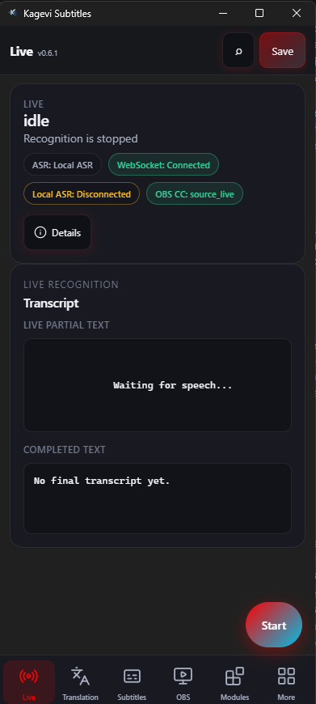

Live — the control desk
Start and stop recognition, watch status chips, read the live transcript, and preview subtitle output before it hits OBS.
- Start sends the current config snapshot (including unsaved edits).
- Choose Web Speech or Local ASR when the module is ready.
- Subtitle preview mirrors the OBS overlay payload shape.
- Compact layout fits a secondary monitor or phone-style window.